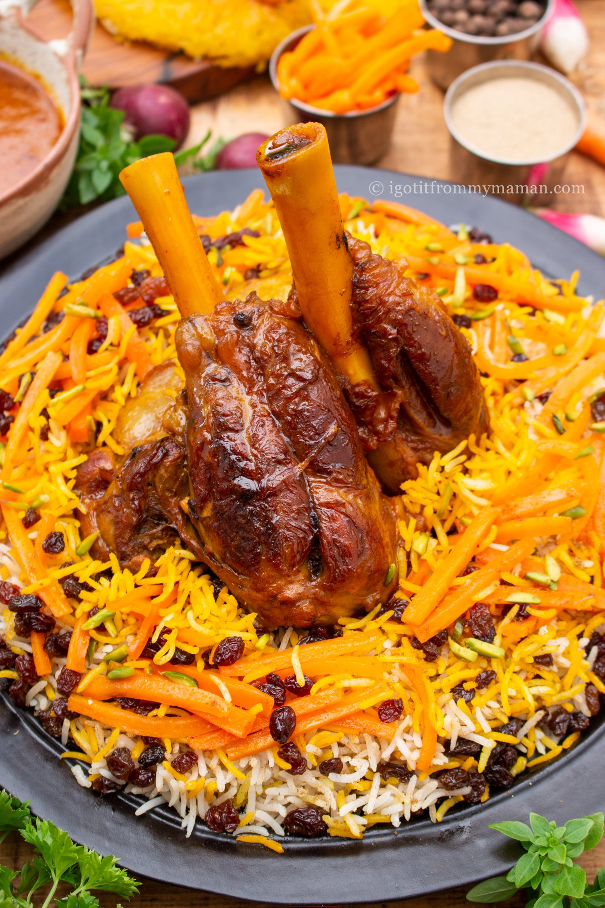
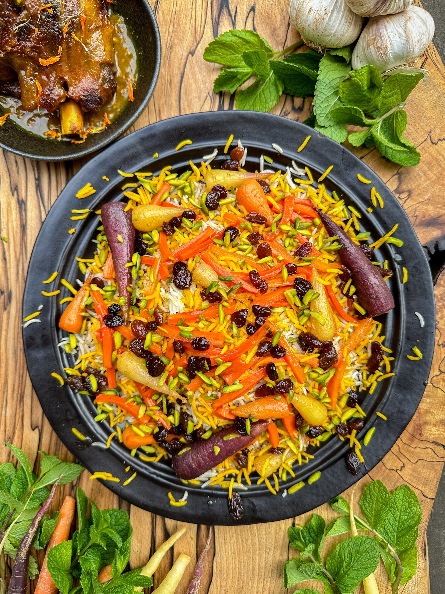

Note: Usually, the rice is layered with spices, meat, sauce, carrots, and raisins, similar to Persian Loobia Polo. If you want to use this method you should wait with parboiling the rice until the meat is perfectly cooked.
Because I wanted to leave my lamb shanks whole for the presentation I took another approach and only layered the rice with the spices only. Then I served my Ghabeloi Polo with caramelised carrots, raisins, and slivered pistachios on top. I also served the meat and sauce separately. If you would like to use my method you can start parboiling and steaming the rice once the meat has been simmering for 45 minutes. Below I describe the more traditional approach.
Bring a large enough pot of water to boil and dissolve 2 tbsp salt in it. Don't worry, you will rinse most of the salt off later.
Once the meat is cooked, remove it from the pan. The sauce should be nicely reduced by now. Sieve the sauce through a strainer to filter out the onion and garlic. All their goodness is now in the sauce and you can discard them.
In my alternative method I only combined the parboiled rice with the spices: garam masala, cumin, and cardamom powder before letting it steam.
Serve your Ghabeloi Polo on a large plate. Garnish with the carrots and raisins, you set aside earlier and sprinkle with slivered pistachios, if you like. Enjoy!
If you used my method of serving the whole shanks, you can now mix the remaining saffron water with a small part of the rice and garnish the white rice with it. Arrange the caramelised carrots and raisins on top, as well as optional slivered pistachios. Serve the rice with the lamb shanks and sauce separately.
Note: This recipe was made by Parvaneh Yaghoubi , the chef of the Parimah Recipe Book